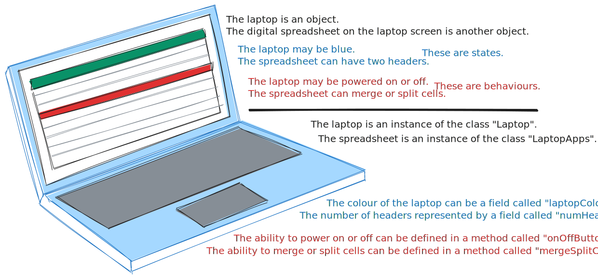

Introduction to programming
Code
Programming is the process of providing a computer or a software application instructions written in code the computer or software application is capable of interpreting and executing to the intention of the programmer.
In computer science, code refers to any organized system of providing a computer instructions to interpret and execute. Source code concerns typed instructions that are human-readable, whereby a human programmer can be reasonably expected to learn and independently implement the syntax of, though the computer cannot. The earliest examples of source code were programmed using a terminals, an electrical device used to enter and extract data from a computer. Subsequent computers incorporated the functionality of a separate terminal, giving rise to the terminal emulator, which is a digital replication of the original device. And since the commercialization of graphical operating systems, many contemporary computers support the use of specialized software applications, called Integrated Development Environments (IDE), which are fully capable of supporting professional programming for general-use or for a particular purpose.
Still, regardless of how source code is implemented, the organizational system that defines the usage of source code is responsible for the conversion of human-readable source code into machine code, which is code that the internal components that the computer comprises of (namely, the central processing unit, or CPU) can execute as instructions. All conventional computers utilize binary instructions, which are then converted to a form that is compatible with the architecture of a particular CPU, the two most common being x86 and ARM. Binary is not readable, at least at a practical scale for computing, by humans. Thus, source code is commonly: assembled, interpreted, compiled or transpiled; methods employed to convert source code into machine code.
Yet, if one reviews the passage above, the fact that machine code is encoded to a form compatible with a particular CPU architecture raises an issue of platform-dependency. Even if the organizational system for source code could compile or be interpreted across computers with different CPU architectures, the resultant machine code and any modification of the machine code thereafter is only understandable to the architecture it was encoded for. For example, if one developed an application, then components executable on Windows could not execute on macOS or on Android. The issue was only exacerbated in early computers, which could not spare the computation to support platform-neutral systems. Thus, the concept of source code that executed independently of a computer's architecture required decades of research, technological advancement and experimentation: Ultimately culminating into the commercialization of bytecode by Java, a programming language. The bytecode is executed by a virtual machine, a software application that virtualizes a computer, segregating executed code and the original computer.
Abstraction
As an aside, abstraction is the amount of separation that exists between the source code and the resultant machine code or bytecode, which can be expressed by the level of a programming language.
A high-level programming language is a very abstracted language, which often emphasizes readability and descriptiveness, whereby instructions are written using common, easily understood words.
# A Hello, World! program written using Python
# Compile, Execute: python hello_world.py
print("Hello, World!") # The message 'Hello, World!' is sent to the user with a single instruction: print()
A low-level programming language is a minimally abstacted language, whereby instructions are near-direct representations of machine code or bytecode, with the language's syntaxt strongly corresponding to the code it accesses.
; A Hello, World! program for x86-64 Linux, NASM syntax
; Assemble: nasm -f elf64 helloworld.asm
; Link: ld -o helloworld helloword.o
; Execute: ./helloworld
BITS 64
default rel
section .rodata ; read-only data
msg: db "Hello, World!", 10 ; message plus newline
msglen: equ $ - msg ; length computed at assembly time
section .text
global _start ; the ELF entry point
_start:
; write( STDOUT_FILENO, msg, msglen )
mov eax, 1 ; syscall number for write
mov edi, eax ; file descriptor 1 = STDOUT
lea rsi, [rel msg] ; pointer to message
mov edx, msglen ; number of bytes
syscall
; exit( 0 )
xor edi, edi ; status 0
mov eax, 60 ; syscall number for exit
syscall
A bit more involved.
A programming language that exhibits charactersitics of both high-level and low-level programming languages by design can be called "medium-level" programming languages.
// A Hello, World! program written in C
// As the language is platform-dependent, the following commands are for Windows:
//
// Compile: gcc helloworld.c -o helloworld.exe
// Execute: ./helloworld.exe
#include <stdio.h>
int main() {
printf("Hello, World!");
return 0;
}
Programming languages
The organizational system that defines how source code is implemented, encoded into machine code or bytecode and executed is called a programming language.
The earliest programming languages were assembly languages, which includes any low-level programming language that corresponds its source code exceptionally strongly to machine code, such as x86 assembly, which was demonstrated in the section above. Computers such as the IBM 650 were among the first commercially successful computers that were general-purpose, meaning computers in the 1950s were now computationally competent enough to use high-level languages, such as FORTRAN for the IBM 704.
PROGRAM QUAD C—Compute roots of A x² + B x + C = 0
REAL A, B, C, D, X1, X2
C Initialize coefficients
A = 1.0
B = -3.0
C = 2.0
C Compute discriminant D = B*B - 4*A*C
D = B*B - 4.0*A*C
C Compute the two roots
X1 = (-B + SQRT(D)) / (2.0*A)
X2 = (-B - SQRT(D)) / (2.0*A)
C Print results in two F10.5 fields
PRINT 10, X1, X2
10 FORMAT (2F10.5)
END
As evident by the program above, and comparing it to the Hello, World! program written in x86 assembly in the previous section, early high-level programming languages greatly improved human-readability and simplicity of code without sacrificing computing-efficiency.
High-level languages quickly became the mainstay for both programmers and users of computers, not only for their ease of use, yet also due to the exponential growth in the architectural scale of subsequent computers. By the 1960s, operating systems were massive in comparison to earlier computers that lacked one entirely and software rapidly escalated to millions of lines of high-level code. The increasing demand for high-level languages suited for a particular purpose resulted in an explosion of high-level programming languages for commercial or scientific use, such as COBOL, ALGOL and C.
Until the 1980s, computers used command-line interfaces (CLI), which were text-based operating systems that required the user to write command lines to operate. Yet, the graphical user interface (GUI) was popularized with the advent of the personal computer (PC), a computer intended for use by a single individual, who may or may not be able to easily understand or willing to learn command lines to use a computer. The Lisa OS (Apple Computer, Inc.), Workbench (Commodore International) and Windows 95 (Microsoft Corporation) were among the first commercially successful examples of a PC that used a GUI.
As such, existing programming languages maintained their purpose as an industrial or scientific tool (such as Fortran 2023, the 2023 revision of FORTRAN, which was released in 1957), continually expanded their capabilities for more general use (such as C23, the 2024 revision of C, released in 1972) or new languages were developed, either based on previous languages (such as C++, which was based on C) or introduced concepts that were previously commmercially unviable (such as Java, which used bytecode, virtual machines and just-in-time compilation).
Subsequent evolutions in computing and the increasing digitalization of many industries have solidified the usage of particular programming languages in particular sectors (Java is largely used for enterprise, COBOL dominates business and R is commonly used for statistics), the prevelance of general-purpose languages (Python is famous for its compatibility with other, higher-performance languages, such as C++) and even leading businesses developing their own programming language (Go was developed by Google for its codebases).
Programming paradigm
The general methodology of organizing and executing code that a collective of programming languages utilize is called a programming paradigm.
Historically, the concept of a paradigm was not established until well after the popularization of early high-level programming languages: all assembly languages were solely imperitive. Instructions were written and executed in descending order, whereby all code on each subsequent line was executed at once.
PROGRAM SUMSQ
C Fortran 77 fixed-form: code starts in column 7
INTEGER X, Y, SX, SY, SUM
X = 3
Y = 4
SX = X * X C square of X
SY = Y * Y C square of Y
SUM = SX + SY C sum of the two squares
PRINT *, 'Sum of squares =', SUM
END
Procedural programming organizes code in an imperitive programming language into procedures, or functions, which are groups of code that are written to execute in a particular manner and are reusable throughout a program. Assembly languages often became procedural after continued development, though often as a consequence rather than by intention.
// SumOfSquares.c
#include
// Compute the square of a number.
int square(int x) {
return x * x;
}
// Sum the squares of two numbers.
sumOfSquares(int x, int y) {
return square(x) + square(y);
}
// Print the sum.
int main(void) {
int result = sumOfSquares(3, 4);
printf("Sum of squares: %d\n", result);
return 0;
}
Functional programming mandates that functions are deterministic and do not cause any side-effects, which concerns any observable effect other than the predominant effect of a function returning some resultant value. Programming languages that are solely functional are few in comparison to those of other paradigms, though various multi-paradigm programming languages are capable of implementing the paradigm.
-- SumOfSquares.hs
-- Compute the square of a number.
square :: Num a => a -> a
square n = n * n
-- Sum the squares of two numbers.
sumOfSquares :: Num a => a -> a -> a
sumOfSquares a b = square a + square b
-- Print the sum.
main :: IO ()
main = print (sumOfSquares 3 4)
Structural programming is a broad category of programming languages that introduces structures that can manipulate control flow beyond fundamental imperitive or procedural programming. The execution of these structures are dependent on some condition, whereby code can be repeatedly executed or not executed (skipped over). Nearly all programming languages are structural.
# sum_of_squares.py
x = 3
y = 4
# Computes the sum of the square of two numbers only if both x and y are greater than 0
if x > 0 and y > 0:
sum_squares = x * x + y * y
print(sum_squares)
Modular programming is another broad category of programming languages that introduces modules or packages, which are general-purpose programs that may be imported into and used across any program written in the same language. Since the structure within a program begot the structuring of passed information between programs, all programming languages that are structural are also modular.
# square.py
# A module that computes the square of a number
def square(x);
return x*x
# sum_of_squares.py
# Using the module to compute the sum of the squares of two numbers
import square.py
x = 3
y = 4
sum_squares = square.square(x) + square.square(y)
print(sum_squares)
The most contemporary programming paradigm is object-orientation programming (OOP), whereby objects are created by the program. An object is defined by its state (attributes) and behaviours (what the object can do while a program executes). The first programming language to implement OOP was Simula 67. A template (which consumed no computer memory) called a class would have instance variables and procedures declared within it. Particular procedures were exceptional, as they were necessary for the creation and utilization of an object. A constructor assigned an inputted value to each instance variable, allowed for each attribute of the object to be defined and to allow any method that might use an instance variable to execute. An accessor permitted programs outside of the one that held the class to recieve information about the object and a mutator permitted said programs to modify said information.
// SumOfSquares.java
class SumOfSquares {
int x;
int y;
SumOfSquares(int x, int y) { // Regular constructor; inputted values assigned to instance variables
this.x = x;
this.y = y;
}
SumOfSquares() { // Default constructor; when inputted values are not provided.
this.x = 0;
this.y = 0;
}
int getX() {
return x;
}
int getY() { // Both accessors
return y;
}
void setX(int x) {
this.x = x;
}
void setY(int y) { // Both mutators
this.y = y;
}
int SumOfSquares() { // A method that calculates and outputs the sum of two squares
int sum = 0;
xSquare = Math.pow(x, 2);
ySquare = Math.pow(y, 2);
sum = xSquare + ySquare;
return sum;
}
}
// SumOfSquaresDriver.java
class SumOfSquaresDriver {
public static void main(String[] args) {
SumOfSquares sumOfSquares = new SumOfSquares(3, 4); // SumOfSquares object is created; given two values per the constructor
System.out.println(SumOfSquares); // Outputs: 25
System.out.println(SumOfSquare.getX()); // Outputs: 3
SumOfSquare.setX(5); // Sets value of x to 5
System.out.println(SumOfSquares); // Outputs: 41
}
}
In particular, Simula 67 was a class-based OOP language, where classes store information that an instance can possess. Various programming languages that released thereafter, such as SmallTalk, were also class-based. It was not until research of more flexible OOP culminating towards the 1985 release of Self that OOP gave rise to two distinct "sub-paradigms": class-based OOP and prototype-based OOP. The former is what Java uses, where classes define their instances. The latter is what languages such as Javascript use, where an initial object called a prototype defines what information clones can possess.
// SumOfSquares.js
// Prototype (object)
const sumProto = {
init(x = 0, y = 0) {
this.x = x;
this.y = y;
return this;
},
getX() {
return this.x;
},
getY() {
return this.y;
},
sumOfSquares() {
return this.x ** 2 + this.y ** 2;
}
};
const calculator = Object.create(sumProto).init(3, 4);
console.log(calculator.sumOfSquares()); // Outputs: 25
console.log(calculator.getX(), calculator.getY()); // Outputs: 3 4
History of and an introduction to Java
This website is predominately focused on Java, a high-level, general-use programming language historically made outstanding by its Write Once, Run Anywhere, or WORA, protocol. When Java was introduced in 1995, the performance of general-purpose programming languages (such as C and C++) was entirely dependent on the computer and its internals, as languages converted source code into machine code, which was unique to each computer. Java solved the issue by compiling into bytecode which was then executed using the Java Virtual Machine, or JVM. The former ensured that code computers interpret remain consistent and the JVM allowed for any computer to execute bytecode, isolating execution to within that of the software program.
Noteworthily, Java was the first commercially-viable programming language to introduce Just-in-time compilation, or JIT. Interpretation means an interpreter executes lines in sequential order without compilation, which is often slower than compiled code and is more resource-intensive. Ahead-of-time compilation, or AOT, compiles the source code once and creates an executable file. Initial and continued execution is efficient and swift, although is platform-dependent and future alterations are often restrictive. JIT compilation occurs while a computer executes, known as at runtime. As more compilations occur, the compiler becomes "familiarized" with the code, leading to swifter, more optimized compilations and executions. Additionally, future alterations are more readily accepted, as the JIT compiler adapts to changes within programs.
As an brief introduction to the language: Java is a class-based, object-oriented programming (or OOP) language. Objects represent physical things (such as a laptop) or conceptual (such as a spreadsheet on that laptop object) that have states (such as the laptop being coloured blue) and behaviours (such as the laptop being able to be powered on or off). Classes are templates that store fields and methods. An object is an instance of a class: each field and method is assigned a state and a behaviour, respectively, that is unique to each object (though a particular state and method need not be unique between objects). Fields and methods, when referred to as a collective, are called class members (or members). 
An overview of Java classes, class members and constructors.
Classes
A class in Java may be thought of as a template that contains fields and methods (summarily called class methods) from which instances use to define their states and behaviours.
The syntax of a class declaration closely resembles the following pseudocode:
[access modifier, optional] [non-access modifier, optional] [class keyword, mandatory] [name, mandatory] {
[code goes in between the braces]
}
The word "class" is a reserved keyword in Java, whereby the written word is recognized by the JVM and
cannot be used in other contexts. The use of the keyword is mandatory when declaring a class, which is followed by
the name of the class, a identifier that is unique among other classes within a single .java
file, and used when a class must be referenced to in another context within a program.
What is not necessarily mandatory (though highly recommended for usage when outside of immediate necessaity) are modifiers, keywords used to alter the functionality of a component within the program, specifically access modifiers and non-access modifiers. The former concerns how, here, a class is percieved and accessed by methods within or outside of a program, called scope; the latter concerns any other modifier that does not intentionally affect scope.
/**
* "public" : Accessible everywhere, so long as a reliable path to the class exists.
* "final" : The class cannot be extended from (otherwise known as inheritance, covered in detail in later webpages).
* "class" : The keyword necessary to declare a class.
* "Driver" : The name of the class, written in PascalCase (every word capitalized; spaces eliminated).
*/
public final class Driver {
// Code goes here
}
Fields and instance variables
A field is some variable that is declared and assigned a value (called initialization), whilst an instance variable is a field declared within a class yet also not in any method defined within the same class.
The declaration and initialization of a field is as such (whereas an instance variable is identical, only not declared within a method):
DECLARATION
[access and non-access modifiers, optional] [type of variable, mandatory] [name of variable, mandatory];
INITIALIZATION
[name of variable] = [value compatible with type of variable];
The type of a variable is its corresponding data type, a reserved keyword that specifies how a computer should interpret the data of a value once the field is initialized.
/**
* "private" : Only accessible to methods within a classg
* "int" : An integer value
* "numCars" : The name of a class, written in camelCase (first word uncapitalized; following words are; spaces eliminated)
*/
public class Dealership {
private int numCars;
}
As an aside, the particular field represented above is called a private instance variable (PIV), which are
common as the private access modifier restricts access to and disallow the modification of instance
variables critical to the functioning of a program.
Methods
Simply put, a method is code that fulfills some intended purpose upon execution. A concrete method is defined by executable code upon declaration, while an abstract method does not and relies on being defined in classes outside of the class it was declared within.
The declaration of a concrete method is divided between its method signature and its parameter list.
The former includes potential modifiers, return type (the data type a method can pass to a program,
including void, which specifies the method does not pass any data), followed by
the name of the method. The latter is a comma-separated list that defines the type of variable (called
parameters) with a placeholder name. The value of a variable passed into the method is called an
argument.
METHOD SIGNATURE
[access and non-access modifiers, optional] [return type, mandatory] [name of method, mandatory]
PARAMETER LIST
([type of parameter, mandatory] [name of parameter, mandatory], ...)
Put together:
public void readOutItem(double[] list, int i) {
System.out.println(list.get(i));
}
Constructor
A constructor is a specialized method that allows the class to create instances. Constructors typically take in parameters, whereby each instance variable is then assigned to a corresponding parameter. A constructor has a particular declaration that is recognized by the JVM: the name of the constructor must exactly match that of the class and each parameter in the constructor's parameter list must correspond exactly to each instance variable.
class Driver {
String word;
int num;
Driver(String word, int num) {
this.word = word; // The 'this' keyword can be used if the names of the parameter and instance variable are identical
this.num = num;
}
}
An aside on Oak
The direct progenitor of Java was a programming language called Oak. In fact, the major objectives of Oak were eventually transferred to the development of Java, notably: platform-neutrality (which eventually evolved in WORA), full OOP, memory safety, multitheading (permitting concurrent operations) and readability (a simpler syntax than C++). Notably, features that were not retained in the development of Java were more similar to the syntax of C++, which was multi-paradigm.
Whilst Oak is a discontinued, experimental language, the 1933 Oak Specification (PDF) and 1994 Oak Language Specification (PDF) are two major canonical sources of Oak that still exist in their entirety. Both documentations are historically important, as they reveal critical decisions that lead to the development and release of Java in 1995.